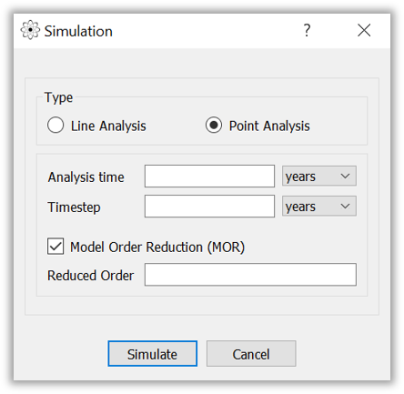
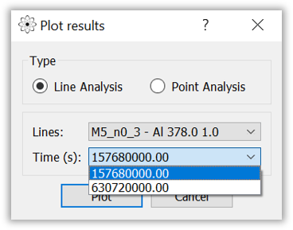
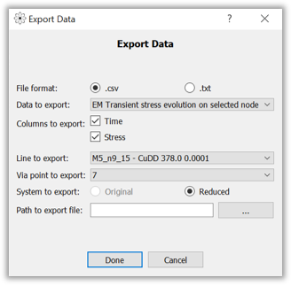

Table of contents:
The "New" option allows you to create a new PROTON project from scratch. When you select this option, a new, empty proeject will be opened in the application. You can then select the powergrid design to analyze.
The "Open" option enables you to open an existing PROTON project stored on your computer. When you choose this option, a file browser dialog box will appear, allowing you to navigate to the location where your project is saved.
The "Save" option allows you to save the changes made to the current PROTON project. It is recommended to save your work periodically to prevent data loss.
The "Exit" option is used to close the application. When selected, the program will be terminated, and any unsaved changes may be lost.
The "Simulate" menu opens a dialog that allows the user to choose the parameters for the simulation. The user can choose between the two key functionalities that our tool provides: "Line Analysis" and "Point Analysis".
The "Plot" menu opens a dialog that allows the user to plot a previously calculated analysis.
The "Export" menu gives the user the option to export Electrmigration (EM) analysis results as well as various EM-related information on the powergrid benchmark.
